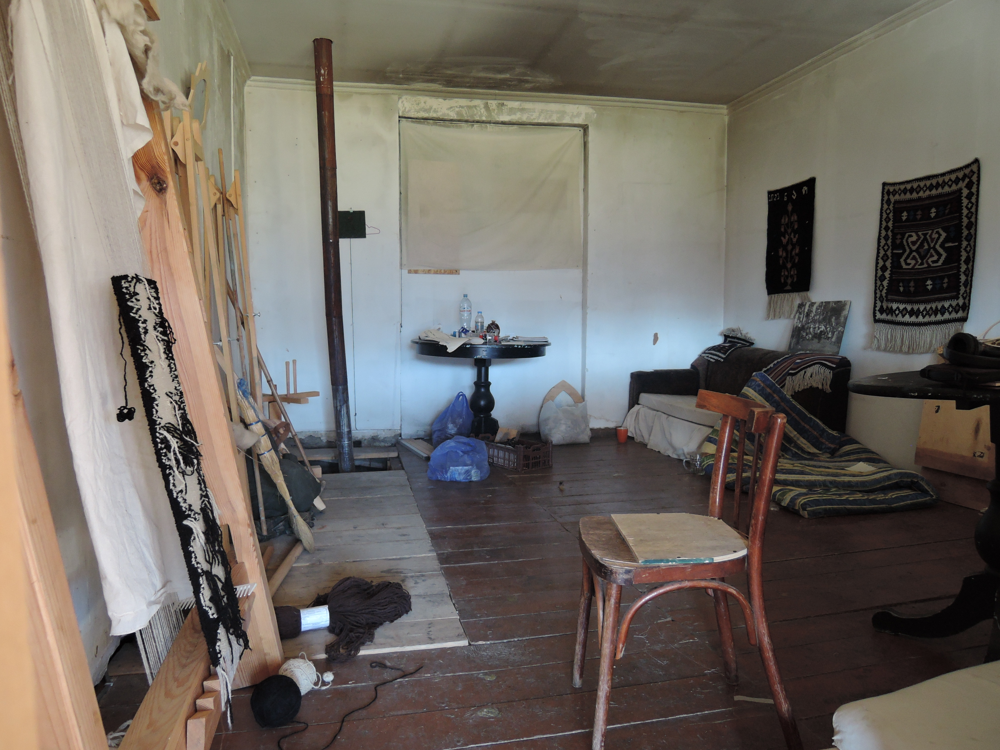
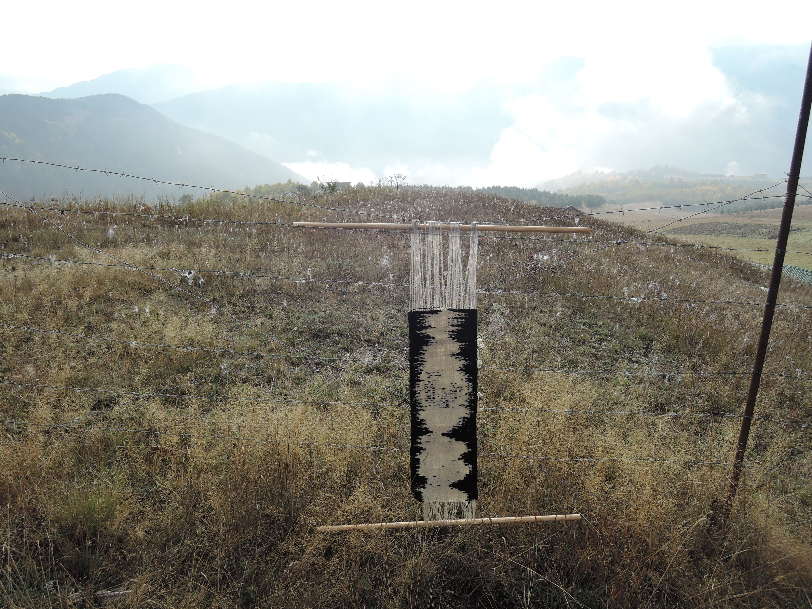
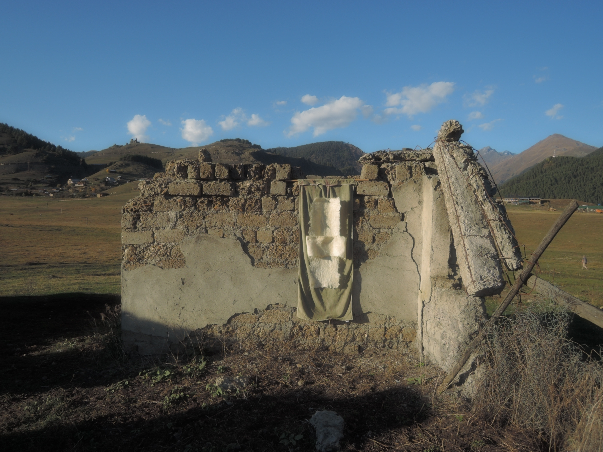
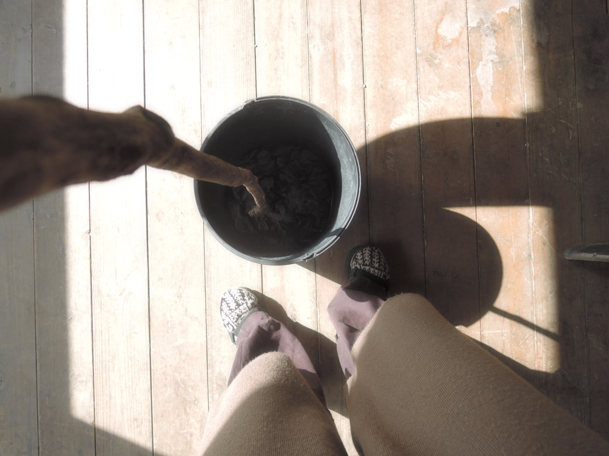
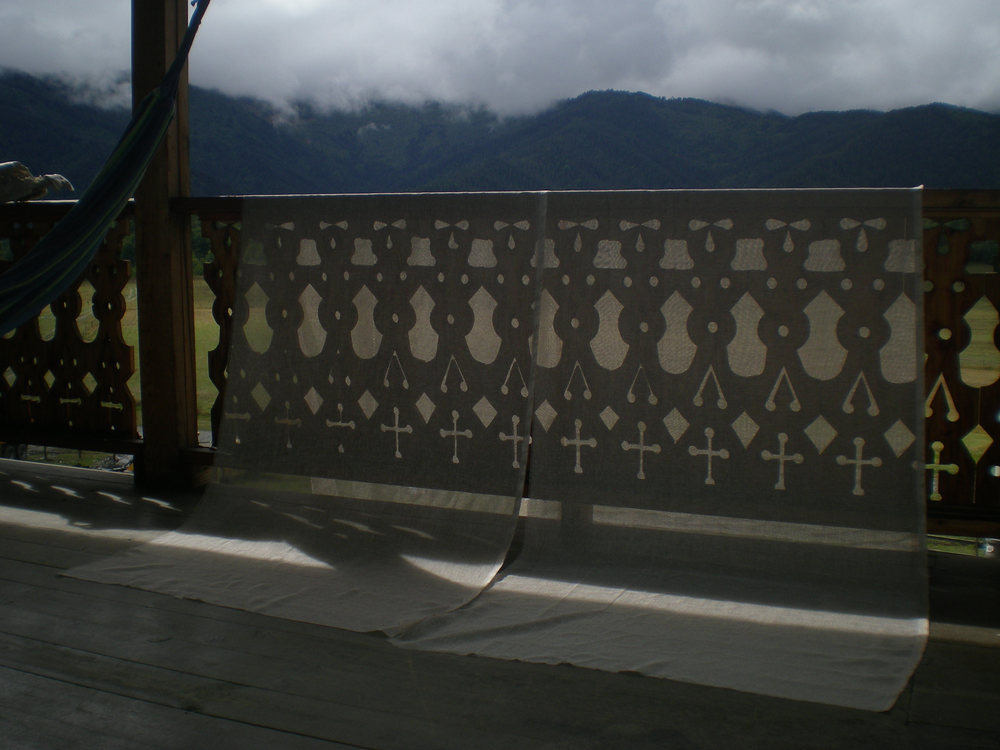
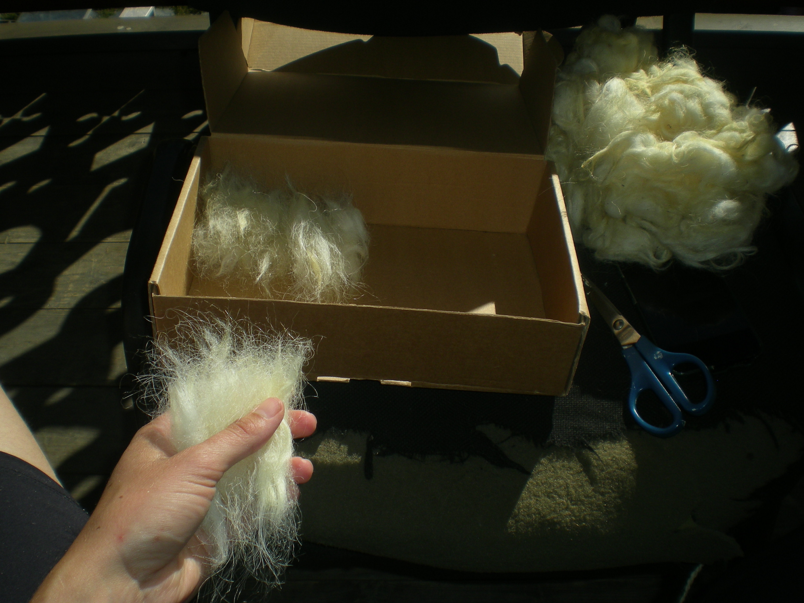
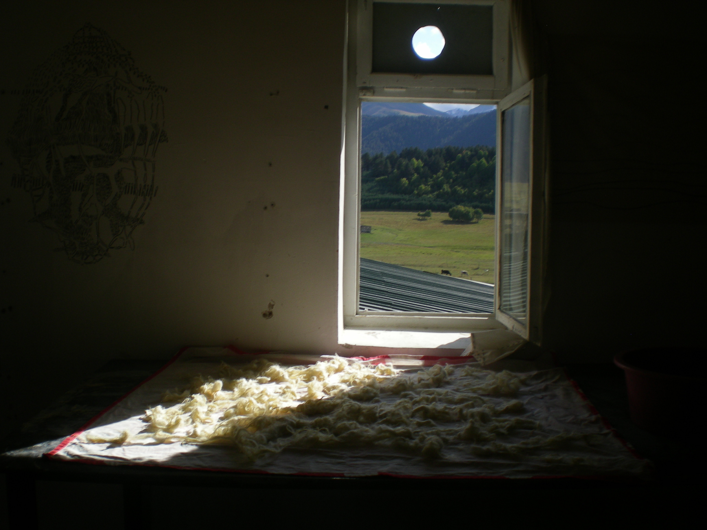

Residency Georgia, Omalo
What happens at dawn, when sheep arrive – dogs howl – no disturbance from artificial lightning. Over lapses of time framed by stars, hunters climb. I mapped out, while fog started hovering over the hills.
My interest grew in how time is being spend by the animals, especially the sheep that had a distinctive way of moving around – guided by a shepherd. Their arrivals in places never made it that long, as their shepherd dogs were moving them around. While visiting Shenako multiple times, I encountered a mountain of sheep’s wool.


The wool was very important during times of war, because it was felted so thick that it would block any bullets. The wool had now become a mountain each time the sheep would lose their hair – later being completely burned. It was interesting to experience and see how the tradition of felting had been industrialized and quite literally burned down even here. While collecting some sheep wool, we entered the place where the sheep would be slaughtered and used for food. In a way this felt like a full circle moment for the lives of the animals.
While visiting villages, many shrines were visible but seemed not permitted to visit, women in particular are not allowed to enter many of the shrines. In its carefully human crafted features, it was clear to see much consideration and devotion went into the making of it. The buildings were loaded with some kind of invisible layer, something untouchable which made me curious of how and why that happens. I produced a weaving filled with spun sheep wool from Tushetii, with an image of a distorted shrine. The sides of the weaving represent the houses and mountains that have been there for hundreds of years.



We got to spend time in Dartlo, an old historic village. Time is very present in this area as we saw multiple shrines, defence towers, graveyards and abandoned houses. Women and children used to find refuge down in the village, while men walked up the hill to stay in the towers and fire guns at the enemy. This time stamp was also detailed in drawings. People used to mark stories by carving lines on flat stones that were hidden in the architecture of the houses and towers. The Flat ’Sipikva’ stones of the houses in Dartlo are only permitted by Tushetians to use for building purposes. At the residency I took care of the sheep wool and felted a symbol that I had found in one of the drawings that depicted hunters and angels.

Next to textile I field recorded many things throughout the day/night to navigate the movements that were happening around the premises, and to work around the sounds with the help of software. In the first week during a sound workshop I developed a song which was produced from sounds that came from traditional instruments, the connections between residents and the place of the residence itself being some kind of a portal for me. After the workshop I continued working on sound pieces and field recordings.

